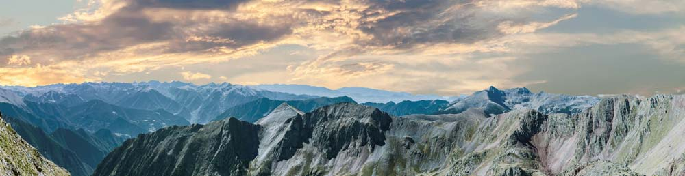

Mountain Biking at its Finest

Resources
Home:
Full-Width Image
Tours Tab Image
Purchase Tab Image
Services Tab Image
Events Tab Image
Contact Us Tab Image
Find a Team Image
Tours:
Full-Width Image
Mystic Lake Tour Image
Mystic Lake Information
South Cottonwood Creek Trail Image
South Cottonwood Information
Bangtail Divide Tour
Bangtail Divide Information
Bridger Foothills Trail #534
Bridger Foothills Train Info
Events:
Full-Width Image
Information on Great Divide Trail
Continental Divide Image
Around Pine Creek Lake Image
Junior Cycle Continental Divide Image
Purchases:
Bike Information and Image
Bike Information and Image
Bike Information and Image
JQuery Library
Full-Width Image
Services:
Full-Width Image
Contact:
Full-Width Image